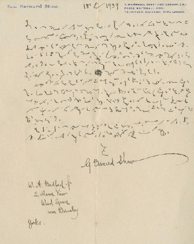

International
InternationalDlaczego George Bernard Shaw pisał stenograficznie?
2011-04-06 | autor: flamenco108George Bernard Shaw był postacią nietuzinkową z wielu względów. Polska wikipedia nie wspomina o takich faktach (angielska tylko pokrótce), jak jego pasje związane z reformą ortografii angielskiej. Nie napisano tam również, że miał zwyczaj stenografować swoje utwory, choć nie tylko dlatego, że w ten sposób można pisać szybciej. Oto odręczny list Shawa do W.A. Bedforda z 18 stycznia 1939 roku. Mam tylko fragmenty przetranskrybowane, które niniejszym niżej prezentuję we własnym tłumaczeniu:

“All my works are written in Pitman as far as first drafts are concerned” “Wszystkie swoje prace napisałem Pitmanem, w każdym razie ich pierwsze redakcje”
oznajmia Shaw i kontynuuje:
“But you will look in vain in my shorthand for grammalogues and logorams, and contractions and word groups which make verbatim reporting possible. I have long since discarded most of them as unnecessary for my work, and very baffling to the typist who has to transcribe it. Of course I retain the ticks and dots that stand arbitrarily for the articles, prepositions, and conjuctions, with some of the words that occur most frequently; but for the rest, when there is no speaker to pace me, and my speed can be no greater than at which I can compose, I find it far easier, and consequently shorter, to spell the word fully than to recollect or invent a contraction for it.”
“Jednak próżno by szukać w mojej stenografii znaczników, skrótów, zgrupowań słów i logogramów, dzięki którym można zapisywać dokładnie słowo mówione. Dawno temu porzuciłem je jako nieprzydatne w mojej pracy i bardzo kłopotliwe dla maszynistki, która musiała je transkrybować. Oczywiście zachowuję kropki i kreski diakrytyczne tam, gdzie to konieczne dla partykuł, przyimków i spójników z najczęściej występującymi słowami; lecz dla reszty, skoro nie ma mówcy, który by mi narzucał tempo, a moja prędkość nie musi być większa niż taka, w której swobodnie komponuję, znajduję to łatwiejszym i konsekwentnie krótszym, wypisywanie słów w pełni, niż przypominanie sobie, lub wymyślanie dla nich skrótów.”
I dalej:
“You must also allow for the fact that I learned shorthand sixty years ago. During that time it has been necessary to make changes to prevent the textbooks from falling out of copyright into the public domain. I have not followed these changes. I place the short vowels in the old way, and have some other obsolete tricks that baffle the up-to-date typist.”
“Musisz również zważyć fakt, że nauczyłem się stenografii sześćdziesiąt lat temu. Od tamtej pory system musiał być zmieniany, by zapobiec uwolnieniu praw autorskich podręczników do domeny publicznej. Nie podążałem za tymi zmianami. Oznaczam krótkie samogłoski na stary sposób, stosuję także kilka przebrzmiałych trików, które kłopoczą moją wykształconą współcześnie maszynistkę.”
Konkluduje:
“I have done a good deal of my writing in the train, and I have found Pitman, because the characters are not written, but drawn, resists the joggling of the carriage much better than longhand, which is often hopelessly illegible under such circumstances.”
“Dużo piszę w pociągach i znajduję Pitmana, jako że jego znaki są bardziej rysowane, niż pisane, bardziej odpornym na wstrząsy wagonu niż pismo długie, które w takich warunkach staje się często beznadziejnie nieczytelne.”
Wiemy zatem, że Shaw korzystał z systemu Pitmana. Pisał dużo w pociągach, podczas swoich podróży do Londynu. Stenografia Pitmana jego zdaniem jest łatwiejsza do użycia w trudnych warunkach, kiedy trzęsie, może na stojąco i w marszu. Cóż, system ten sprawdzał się także przed wynalezieniem kolei żelaznej, przed pracami z zakresu ergonomii i BHP - rzeczywiście będzie miał przewagę nad pismem długim. I nie można zapominać, że w taki sposób pisząc, Shaw mógł produkować tekst szybciej, niż przepisywała go później maszynistka.
A zatem, początkujący pisarze, którzy nie macie czasu zasiąść za biurkiem, za to go mnóstwo spędzacie w środkach komunikacji publicznej, zastanówcie się, może sensownie byłoby nauczyć się jakiejś stenografii?
;-)
2011-04-06 autor: flamenco108